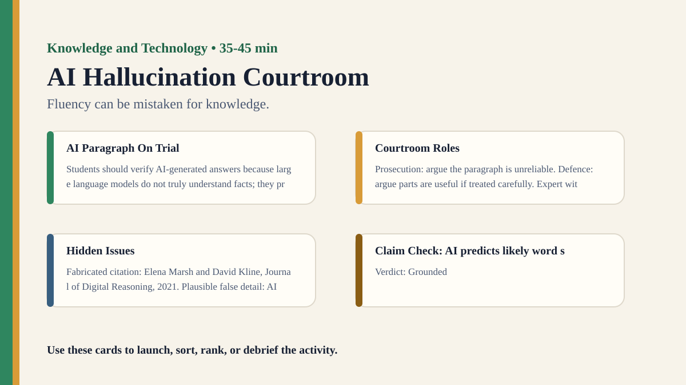

Free classroom resource pack
AI Hallucination Courtroom
Fluency can be mistaken for knowledge.
Included Files
{kind=link}
Visual Prompt

Student Prompt
Put the AI paragraph on trial. For each claim, decide: grounded, unsupported, false, or needs verification.
Actual Lesson Questions
These are the questions students answer during the lesson, not just teacher-facing discussion prompts.
| # | Question for students | Teacher key / cue |
|---|---|---|
| 1 | Which claim in the paragraph sounds most authoritative? | The fabricated 2021 study and percentage often sound authoritative. |
| 2 | Which claim can be accepted as broadly grounded? | AI can produce fluent but incorrect answers; language models predict likely word sequences. |
| 3 | Which claim is fabricated? | The Marsh and Kline citation in the Journal of Digital Reasoning. |
| 4 | Which claim is plausible but false or overgeneralised? | AI tools are connected to the live internet by default. |
| 5 | What made the paragraph feel trustworthy? | Fluent tone, specific names, journal title, percentage, and confident explanation. |
| 6 | Can this paragraph count as knowledge? Why or why not? | Partly; some claims are reasonable, but the fabricated/unsupported claims prevent treating it as reliable knowledge without verification. |
Concrete Stimulus Packet
Print or project these exact stimuli. Students should inspect these before the debrief.
Stimulus
AI Paragraph On Trial
Students should verify AI-generated answers because large language models do not truly understand facts; they predict likely sequences of words based on patterns in training data. This means they can produce answers that sound fluent and authoritative even when details are wrong. For example, a 2021 study by Elena Marsh and David Kline in the Journal of Digital Reasoning found that 68% of AI-generated school summaries contained at least one factual error. AI tools are also connected to the live internet by default, so they usually update themselves instantly when new information appears. Because of this, students should treat AI as a starting point for inquiry, not as a final authority.
Prompt given to AI: Explain why students should verify AI-generated answers.Stimulus
Courtroom Roles
Prosecution: argue the paragraph is unreliable. Defence: argue parts are useful if treated carefully. Expert witness: explain hallucinations. Judge: classify claims. Jury: vote mostly reliable, partly reliable, or misleading.
Assign roles before students see the hidden issues.Stimulus
Hidden Issues
Fabricated citation: Elena Marsh and David Kline, Journal of Digital Reasoning, 2021. Plausible false detail: AI tools are connected to the live internet by default. Grounded claim: AI can produce fluent but incorrect answers. TOK point: fluency can create misplaced trust.
Teacher reveal after verdicts.Stimulus
Claim Check: AI predicts likely word sequences
Verdict: Grounded
This broadly describes how language models generate text.Stimulus
Claim Check: AI can sound authoritative while wrong
Verdict: Grounded
This is a known risk of generative AI.Stimulus
Claim Check: Marsh and Kline study, 2021
Verdict: False/Fabricated
The citation is invented for this activity.Stimulus
Claim Check: 68% of school summaries had errors
Verdict: Unsupported
Depends entirely on the fabricated study.Stimulus
Claim Check: AI tools are live online by default
Verdict: False
Some tools can browse, but many do not by default.Stimulus
Claim Check: AI should be a starting point, not final authority
Verdict: Reasonable conclusion
Supported by the earlier risks.Student Task
For each claim, decide: grounded, unsupported, false, or needs verification. Then write: “Can this paragraph count as knowledge? Why or why not?”
Teacher Key / Reveal
The paragraph is partly useful but not reliable as knowledge without verification because it combines grounded claims with fabricated and overgeneralised details.
- AI predicts likely word sequences: Grounded — This broadly describes how language models generate text.
- AI can sound authoritative while wrong: Grounded — This is a known risk of generative AI.
- Marsh and Kline study, 2021: False/Fabricated — The citation is invented for this activity.
- 68% of school summaries had errors: Unsupported — Depends entirely on the fabricated study.
- AI tools are live online by default: False — Some tools can browse, but many do not by default.
- AI should be a starting point, not final authority: Reasonable conclusion — Supported by the earlier risks.
Teacher Run Sheet
- Prepare a starter stimulus using: An AI-generated paragraph with one fabricated citation and one plausible false detail.
- Print or project the student response grid before the activity begins.
- Plan a private first-response moment before any group discussion.
Concrete Examples
- An AI-generated paragraph with one fabricated citation and one plausible false detail.
- Courtroom roles for prosecution, defence, expert witness, judge, and jury.
- An evidence table asking which claims are grounded, unsupported, or unverifiable.
Printable Activity Cards
Print, cut, sort, rank, annotate, or project these cards. They are deliberately fictional/open so teachers can adapt them safely.
Stimulus
AI Paragraph On Trial
Students should verify AI-generated answers because large language models do not truly understand facts; they predict likely sequences of words based on patterns in training data. This means they can produce answers that sound fluent and authoritative even when details are wrong. For example, a 2021 study by Elena Marsh and David Kline in the Journal of Digital Reasoning found that 68% of AI-generated school summaries contained at least one factual error. AI tools are also connected to the live internet by default, so they usually update themselves instantly when new information appears. Because of this, students should treat AI as a starting point for inquiry, not as a final authority.
Prompt given to AI: Explain why students should verify AI-generated answers.Stimulus
Courtroom Roles
Prosecution: argue the paragraph is unreliable. Defence: argue parts are useful if treated carefully. Expert witness: explain hallucinations. Judge: classify claims. Jury: vote mostly reliable, partly reliable, or misleading.
Assign roles before students see the hidden issues.Stimulus
Hidden Issues
Fabricated citation: Elena Marsh and David Kline, Journal of Digital Reasoning, 2021. Plausible false detail: AI tools are connected to the live internet by default. Grounded claim: AI can produce fluent but incorrect answers. TOK point: fluency can create misplaced trust.
Teacher reveal after verdicts.Stimulus
Claim Check: AI predicts likely word sequences
Verdict: Grounded
This broadly describes how language models generate text.Stimulus
Claim Check: AI can sound authoritative while wrong
Verdict: Grounded
This is a known risk of generative AI.Stimulus
Claim Check: Marsh and Kline study, 2021
Verdict: False/Fabricated
The citation is invented for this activity.Stimulus
Claim Check: 68% of school summaries had errors
Verdict: Unsupported
Depends entirely on the fabricated study.Stimulus
Claim Check: AI tools are live online by default
Verdict: False
Some tools can browse, but many do not by default.Stimulus
Claim Check: AI should be a starting point, not final authority
Verdict: Reasonable conclusion
Supported by the earlier risks.Lesson question
Question 1
Underline the most persuasive detail.
The fabricated 2021 study and percentage often sound authoritative.Lesson question
Question 2
Mark grounded claims with G.
AI can produce fluent but incorrect answers; language models predict likely word sequences.Lesson question
Question 3
Mark fabricated claims with F.
The Marsh and Kline citation in the Journal of Digital Reasoning.Lesson question
Question 4
Mark false or overgeneralised claims with X.
AI tools are connected to the live internet by default.Lesson question
Question 5
Name the trust cues.
Fluent tone, specific names, journal title, percentage, and confident explanation.Lesson question
Question 6
Write the courtroom verdict.
Partly; some claims are reasonable, but the fabricated/unsupported claims prevent treating it as reliable knowledge without verification.Student task
Student Task
For each claim, decide: grounded, unsupported, false, or needs verification. Then write: “Can this paragraph count as knowledge? Why or why not?”
How can fluency imitate knowledge while lacking reliable grounding, source accountability, or warranted justification?Teacher reveal
Teacher Reveal
The paragraph is partly useful but not reliable as knowledge without verification because it combines grounded claims with fabricated and overgeneralised details.
AI predicts likely word sequences: Grounded — This broadly describes how language models generate text. | AI can sound authoritative while wrong: Grounded — This is a known risk of generative AI. | Marsh and Kline study, 2021: False/Fabricated — The citation is invented for this activity. | 68% of school summaries had errors: Unsupported — Depends entirely on the fabricated study. | AI tools are live online by default: False — Some tools can browse, but many do not by default. | AI should be a starting point, not final authority: Reasonable conclusion — Supported by the earlier risks.Student Recording Sheet
| Card / stimulus | What I noticed | What I inferred | Evidence | Confidence |
|---|---|---|---|---|
Debrief Prompts
- Can fluency be mistaken for knowledge?
- Can a machine be a knower, or only a producer of outputs?
- Who is responsible for AI misinformation?